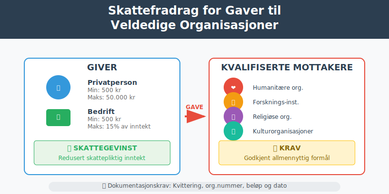
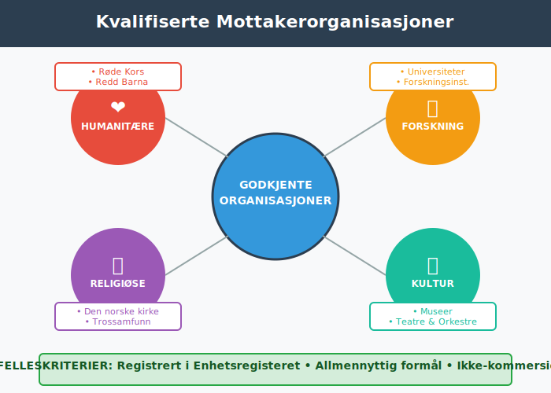
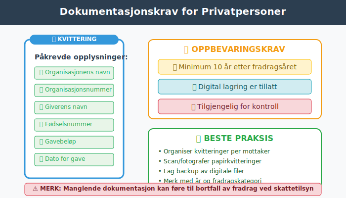
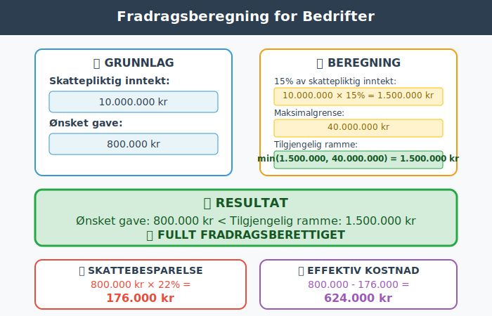
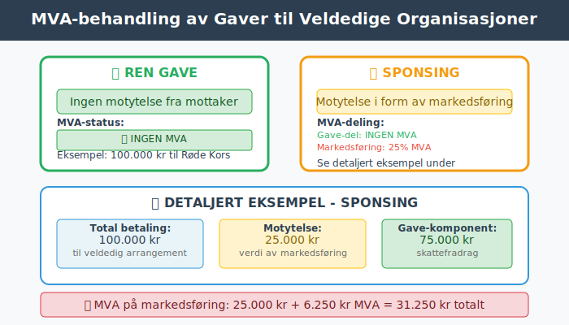
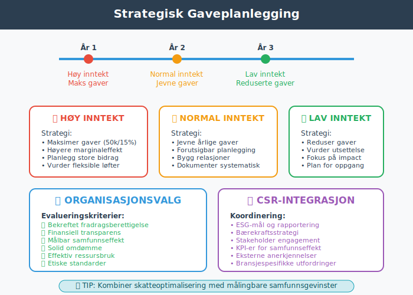
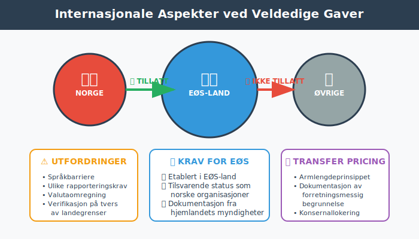
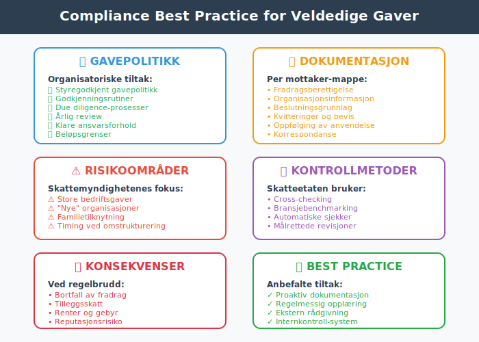
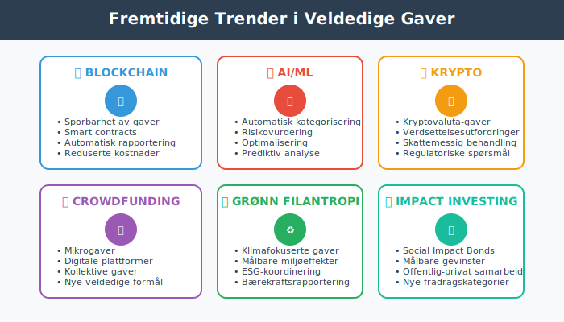
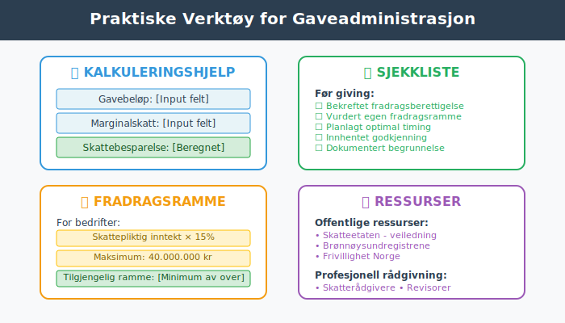

Skattefradrag for gaver til veldedige organisasjoner er en viktig del av norsk skattepolitikk som både fremmer filantropi og gir skattemessige fordeler for givere. Disse fradragene reduserer den skattepliktige inntekten og kan være betydelige for både privatpersoner og bedrifter. Ordningen balanserer samfunnets behov for frivillig støtte til veldedige formål med skattemessige incentiver.
Seksjon 1: Grunnleggende om Fradrag for Gaver til Veldedighet
Skattefradrag for veldedige gaver er en statlig incentivordning som oppmuntrer til filantropi ved å redusere giverens skattebelastning. Dette systemet gjør det mer attraktivt å støtte viktige samfunnsformål samtidig som det reduserer statens direkte finansieringsbehov for veldedige organisasjoner.

1.1 Hvem Kan Gi Fradragsberettigede Gaver?
Både privatpersoner og bedrifter kan få fradrag for gaver til kvalifiserte organisasjoner:
Privatpersoner:
- Alle skattepliktige i Norge
- Gaver minimum 500 kr per organisasjon per år
- Maksimalt fradrag på 50.000 kr per år (2024)
- Dokumentasjonskrav med kvittering fra mottaker
Bedrifter:
- Alle skattesubjekter som aksjeselskap og ansvarlige selskap
- Minimum gave 500 kr per organisasjon per år
- Maksimalt fradrag tilsvarer 15% av skattepliktig inntekt (opptil 40 millioner kr)
- Regnskapsføring som fradragsberettiget kostnad
1.2 Kvalifiserte Mottakerorganisasjoner
Godkjente organisasjoner må oppfylle strenge kriterier:
| Organisasjonstype | Hovedkriterier | Eksempler |
|---|---|---|
| Allmennyttige organisasjoner | Humanitære, kulturelle, sosiale formål | Røde Kors, Redd Barna, Leger Uten Grenser |
| Stiftelser | Allmennyttige stiftelser med skattefritak | Helseforskningsstiftelser, kulturstiftelser |
| Forskningsinstitusjoner | Forskning og utdanning | Universiteter, forskningsinstitutter |
| Religiøse organisasjoner | Trossamfunn og menigheter | Den norske kirke, andre trossamfunn |
| Kulturorganisasjoner | Kunst, kultur, historie | Museer, teatre, orkestre |
Viktige vilkår:
- Registrert i Enhetsregisteret
- Allmennyttig formål som hovedaktivitet
- Norsk organisasjon eller tilsvarende i EØS-land
- Ikke-kommersiell virksomhet som hovedregel

Seksjon 2: Regelverket for Privatpersoner
2.1 Minimumsbeløp og Maksimalgrenser
Beløpsgrenser sikrer at ordningen brukes for substantielle gaver:
Minimumsgrensen (500 kr):
- Per organisasjon per år - ikke totalt
- Beskytter mot administrative byrder ved små beløp
- Gaver under 500 kr gir ikke fradrag
- Flere gaver til samme organisasjon kan summeres
Maksimalgrensen (50.000 kr):
- Total grense for alle fradragsberettigede gaver per år
- Beskytter mot for store skattemessige tap for staten
- Ikke overførbar til senere år hvis ikke brukt
- Inflasjonsjustering vurderes regelmessig
Eksempel beregning:
Gave til Røde Kors: 5.000 kr
Gave til Redd Barna: 3.000 kr
Gave til lokalt bibliotek: 2.000 kr
Totalt fradragsberettiget: 10.000 kr
Ved marginalskatt 35%:
Skattebesparelse = 10.000 × 35% = 3.500 kr
2.2 Dokumentasjonskrav og Regnskapsføring
Dokumentasjon er essensielt for å kunne kreve fradraget:
Krav til kvittering:
- Organisasjonens navn og organisasjonsnummer
- Giverens navn og fødselsnummer
- Gavebeløp og dato for gave
- Bekreftelse på at mottaker er fradragsberettiget
- Underskrift eller elektronisk bekreftelse
Oppbevaring:
- Minimum 10 år etter det år fradraget kreves
- Digital lagring er tillatt
- Tilgjengelig for skattemyndighetenes kontroll
- Organisert arkivering anbefales

2.3 Særlige Regler og Unntak
Gaver til religiøse organisasjoner:
- Trossamfunn må være offentlig registrert
- Kollekt og offer i gudstjenester kvalifiserer ikke
- Sponsorat av religiøse arrangement kan kvalifisere
- Medlemskontingent er normalt ikke fradragsberettiget
Gaver til politiske organisasjoner:
- Politiske partier kvalifiserer ikke for fradrag
- Politiske kampanjer og valgkamp får ikke fradrag
- Think tanks kan kvalifisere hvis de oppfyller kravene til allmennyttig formål
Gaver i form av verdipapirer:
- Markedsverdi på overdragelsestidspunktet legges til grunn
- Gevinst/tap ved salg påvirker ikke fradragsretten
- Kostpris for giver vs. markedsverdi for fradrag kan skape fordel
Seksjon 3: Regelverket for Bedrifter
3.1 Fradragsberettigelse for Selskaper
Bedrifter har noe andre regler enn privatpersoner:
Generelle vilkår:
- Samme minimumsbeløp (500 kr per organisasjon)
- Maksimum 15% av skattepliktig inntekt eller 40 millioner kr
- Tilknytning til bedriftens virksomhet ikke påkrevd
- Regnskapsføring som driftskostnad
Skattemessig behandling:
Bokført kostnad:
Debet: Gaver til veldedige organisasjoner (kostnad)
Kredit: Bank (eller Leverandørgjeld)
Skattemessig justering:
Skattepliktig inntekt reduseres med fradragsberettiget del
3.2 Beregning av Maksimalfradrag
15%-regelen gir fleksibilitet basert på bedriftens størrelse:
Beregningsmetode:
Skattepliktig inntekt før justering for gaver: 10.000.000 kr
Maksimalt fradrag = min(10.000.000 × 15%, 40.000.000) = 1.500.000 kr
Faktisk gave: 800.000 kr
Fradragsberettiget beløp: 800.000 kr (under maksimum)
Planlegging for store gaver:
- Spredning over flere år hvis gave overstiger 15%-grensen
- Timing av gaver i forhold til inntektsnivå
- Koordinering med andre skattefraderag

3.3 Konserninternt og Samarbeid
Konsernstrukturer:
- Hver juridisk enhet har egen fradragsrett
- Konsernbidrag kan ikke brukes til å øke fradragsrammen
- Morselskap kan ikke “låne” fradrag fra datterselskap
- Felles gaver må fordeles basert på reell givere
Strategisk planlegging:
- Konsolidering av gaver gjennom ett selskap
- Taktisk timing basert på resultatutvikling
- Koordinering med andre sponsorat og støtteordninger
Seksjon 4: Regnskapsføring og MVA-behandling
4.1 Regnskapsmessig Behandling
Korrekt regnskapsføring sikrer både compliance og optimal skatteposisjon:
For bedrifter:
Kontoplankode: 7700 - Gaver til veldedige organisasjoner
Ved gaveløfte:
Debet: 7700 Gaver til veldedige organisasjoner
Kredit: 2940 Skyldige gaver til veldedige organisasjoner
Ved betaling:
Debet: 2940 Skyldige gaver til veldedige organisasjoner
Kredit: 1920 Bank
Noter i årsregnskapet:
- Note om vesentlige gaver hvis de påvirker sammenlignbarhet
- Kategorisering etter mottakerkategori
- Eventuelle forpliktelser til fremtidige gaver
4.2 MVA-behandling
Merverdiavgift påvirkes ikke av veldedige gaver:
Hovedprinsipper:
- Ingen MVA på gaver til veldedige organisasjoner
- Ikke fradragsberettiget inngående MVA på kjøp relatert til gaver
- Sponsored gaver (med motytelse) kan ha MVA-konsekvenser
- Arrangementer vs. rene gaver har ulik MVA-behandling
Eksempel - sponsored arrangement:
Sponsing av veldedig arrangement: 100.000 kr
Motytelse i form av markedsføring: 25.000 kr
Gave-komponent: 75.000 kr (ikke MVA)
Markedsføring: 25.000 kr + 6.250 kr MVA

4.3 Rapportering og Oppfølging
Skattemeldingen:
- Post 3.1.9 - Fradrag for gaver til frivillige organisasjoner
- Vedlegg med dokumentasjon ved forespørsel
- Spesifisering av mottakere ved større beløp
Internkontroll:
- Godkjenningsrutiner for gaver over visse beløp
- Oppfølging av fradragsrammer og dokumentasjon
- Årsrapportering av total gavepolitikk
Seksjon 5: Strategisk Gaveplanlegging
5.1 Skatteoptimal Timing
Timing av gaver kan optimalisere skattegevinsten:
Inntektsbasert planlegging:
- År med høy inntekt - maksimer gaver for høyere marginaleffekt
- År med lav inntekt - vurder utsettelse hvis mulig
- Pensjoneringstransisjon - planlegg gaver før inntektsreduksjon
- Bedriftsutvikling - koordiner med omstrukturering
Maksimalgrenser:
| Scenario | Strategi | Fordel |
|---|---|---|
| Store engangsbeløp | Spre over flere år | Unngå tap av fradrag over grense |
| Jevn inntekt | Årlige gaver nær maksimum | Maksimal skattegevinst |
| Variabel inntekt | Fleksible beløp | Tilpasning til inntektsnivå |
5.2 Organisasjonsvalg og Due Diligence
Valg av mottakerorganisasjon påvirker både fradragsrett og samfunnseffekt:
Evaluringskriterier:
- Fradragsberettigelse bekreftet hos skattemyndighetene
- Finansiell transparens og årsrapportering
- Effektivitet i bruk av mottatte midler
- Samfunnsmessig impact og måloppnåelse
- Reputasjon og etiske standarder
Risikoområder:
- Nye organisasjoner uten etablert track record
- Organisasjoner under etterforskning eller tvist
- Potensielle interessekonflikter med givere
- Politiske overtoner som kan påvirke bedriftens omdømme

5.3 Koordinering med CSR og Bærekraftsmål
Integration med bærekraftsstrategi:
- ESG-mål og rapportering koordineres med gavepolitikk
- CSRD-rapportering kan inkludere veldedige bidrag
- Stakeholder engagement gjennom strategiske gaver
- Bransjespesifikke utfordringer adresseres gjennom målrettede gaver
Måling og oppfølging:
- KPI-er for samfunnseffekt av gaver
- Return on Investment i form av samfunnsgevinst
- Rapportering til styret og aksjonærer
- Externe rankinger og anerkjennelse
Seksjon 6: Internasjonale Aspekter
6.1 Gaver til Utenlandske Organisasjoner
EØS-reglene utvider fradragsretten til visse utenlandske organisasjoner:
Kvalifikasjonskrav:
- EØS-tilknytning - organisasjon etablert i EØS-land
- Tilsvarende status som norske kvalifiserte organisasjoner
- Dokumentasjon av status fra hjemlandets myndigheter
- Samme formålstyper som godkjente norske organisasjoner
Praktiske utfordringer:
- Språkbarriere i dokumentasjon
- Ulike rapporteringskrav i forskjellige land
- Valutaomregning og kursgevinster/-tap
- Skattemessig verifikasjon på tvers av landegrenser
6.2 Transfer Pricing Hensyn
Multinasjonale selskaper må være oppmerksomme på transfer pricing-aspekter:
Armlengdeprinsippet:
- Gaver mellom nærstående parter kan utfordres
- Dokumentasjon av forretningsmessig begrunnelse
- Markedsmessige vilkår for eventuelle motytelser
- Allokering av kostnader i konsernsammenheng
Compliance-rammeverk:
- Lokal dokumentasjon i alle relevante jurisdiksjoner
- Master file og country-by-country reporting
- Risikostyring for potensielle justeringer
- Samordning mellom skattefunksjon og transfer pricing

6.3 Skatteavtaler og Dobbeltbeskatning
Relevante bestemmelser:
- Informasjonsutveksling om store gaver
- Residensbestemmelser for giver og mottaker
- Fordelingsnøkler ved transnasjonale aktiviteter
- Mulige konflikter mellom nasjonale regelverk
Seksjon 7: Kontrollfokus og Compliance
7.1 Skattemyndighetenes Kontrolltiltak
Skatteetaten fokuserer på flere risikoområder:
Høyrisikoområder:
- Store bedriftsgaver som utgjør vesentlig del av fradrag
- Gaver til “nye” organisasjoner uten etablert historie
- Familietilknyttede organisasjoner og potensielle interessekonflikter
- Timing av gaver i forbindelse med omstruktureringer
Kontrollmetoder:
- Cross-checking mellom givers fradrag og mottakers rapportering
- Bransjebenchmarking av gavemønstre
- Automatiske konsistenssjekker i skattemeldinger
- Målrettede revisjoner basert på risikoprofil
7.2 Best Practice for Compliance
Proaktive tiltak reduserer risiko for problemer:
Organisatoriske tiltak:
- Gavepolitikk vedtatt av styret eller ledelse
- Godkjenningsrutiner for alle gaver over visse beløp
- Due diligence-prosesser for nye mottakerorganisasjoner
- Årlig review av gavepolitikk og utbetalinger
Dokumentasjonssystem:
Gavemappe per mottaker:
- Bekreftelse av fradragsberettigelse
- Organisasjonsinformasjon og vedtekter
- Korrespondanse og beslutningsgrunnlag
- Kvitteringer og betalingsbevis
- Oppfølging av anvendelse (hvis relevant)

7.3 Konsekvenser ved Regelbrudd
Administrative sanksjoner:
- Bortfall av fradrag ved mangelfull dokumentasjon
- Tilleggsskatt ved bevisst feilrapportering
- Renter på for lite betalt skatt
- Overtredelsesgebyr ved gjentatte feil
Reputasjonsrisiko:
- Offentliggjøring av skattemessige overtredelser
- Mediefokus på bedriftens gavepraksis
- Stakeholder-reaksjoner på opplevde misbruk
- Langsiktige konsekvenser for tillitsrelasjoner
Seksjon 8: Fremtidige Trender og Utviklingsområder
8.1 Digitalisering av Gaveadministrasjon
Teknologiske løsninger forenkler administrasjon:
Blockchain for transparens:
- Sporbarhet av gaver fra giver til sluttmottaker
- Smart contracts for betingede gaver
- Automatisk rapportering til skattemyndigheter
- Reduserte administrative kostnader
AI og maskinlæring:
- Automatisk kategorisering av mottakerorganisasjoner
- Risikovurdering av nye organisasjoner
- Optimalisering av gavepolitikk basert på historiske data
- Prediktiv analyse av samfunnseffekt
8.2 Utvidet Målgruppe og Nye Gaveformer
Kryptovaluta-gaver:
- Verdsettelsesutfordringer ved volatile valutaer
- Skattemessig behandling av gevinster/tap
- Praktisk gjennomføring og dokumentasjon
- Regulatoriske utfordringer
Crowdfunding og sosiale medier:
- Mikrogaver gjennom digitale plattformer
- Kollektive gaver og delingsøkonomi
- Automatiserte gaver basert på trigger-events
- Nye former for veldedige formål

8.3 Bærekraft og Impact Investing
Grønn filantropi:
- Klimafokuserte gaver og miljøorganisasjoner
- Målbare miljøeffekter som evalueringskriterium
- Koordinering med bedriftens klimastrategi
- Rapportering i henhold til bærekraftsrammeverk
Social Impact Bonds:
- Hybride instrumenter mellom gaver og investeringer
- Målbare samfunnsgevinster som grunnlag for utbetaling
- Offentlig-privat samarbeid om finansiering
- Potensielt ny fradragskategori
Seksjon 9: Praktiske Verktøy og Ressurser
9.1 Sjekklister for Givere
Før giving:
- Bekreftet at mottaker er fradragsberettiget
- Vurdert egen fradragsramme for året
- Planlagt optimal timing av gaven
- Dokumentert forretningsmessig begrunnelse (for bedrifter)
- Innhentet nødvendig intern godkjenning
Ved giving:
- Sikret korrekt betalingsmetode og sporbarhet
- Mottatt komplett kvittering med alle påkrevde opplysninger
- Arkivert dokumentasjon systematisk
- Registrert gave i regnskapssystem (bedrifter)
Etter giving:
- Fulgt opp anvendelse av gaven (hvis relevant)
- Inkludert i skattemelding
- Vurdert fremtidig gavepolitikk basert på erfaring
9.2 Kalkuleringshjelp
Skattegevinst-kalkulator:
Gavebeløp: [Input felt]
Marginalskatt: [Input felt]
Fradragsberettiget del: [Beregnet]
Skattebesparelse: [Beregnet]
Netto kostnad: [Beregnet]
Fradragsramme for bedrifter:
Skattepliktig inntekt: [Input felt]
15% av inntekt: [Beregnet]
Maksimum (40 mill): 40.000.000
Tilgjengelig ramme: [Minimum av over]
Allerede brukt: [Input felt]
Resterende ramme: [Beregnet]

9.3 Kontaktinformasjon og Ressurser
Offentlige ressurser:
- Skatteetaten: Offisiell veiledning og organisasjonslister
- Brønnøysundregistrene: Verifikasjon av organisasjonsstatus
- Frivillighet Norge: Samordning av frivillige organisasjoner
Profesjonell rådgivning:
- Skatterådgivere: Spesialisert planlegging og optimalisering
- Revisorer: Regnskapsmessig behandling og compliance
- Advokatfirmaer: Juridisk veiledning ved komplekse problemstillinger
Konklusjon
Skattefradrag for gaver til veldedige organisasjoner representerer en viktig bro mellom privat filantropi og offentlig finansiering av samfunnsgoder. Ordningen balanserer behovet for statlige inntekter med incitamenter til frivillig støtte av allmennyttige formål.
Nøkkelinnsikter:
- Robust regelverk: Klare kriterier for både givere og mottakere sikrer målrettet bruk
- Fleksible rammer: Forskjellige grenser for privatpersoner og bedrifter tilpasser incentivene
- Dokumentasjonskrav: Strenge krav sikrer sporbarhet og forhindrer misbruk
- Strategiske muligheter: Proaktiv planlegging kan maksimere både samfunnseffekt og skattegevinst
Praktisk anvendelse:
For privatpersoner og bedrifter som ønsker å støtte veldedige formål, er forståelse av fradragsreglene essensielt for:
- Maksimal skattegevinst gjennom optimal timing og struktur
- Compliance-sikkerhet gjennom korrekt dokumentasjon og rapportering
- Strategisk gavepolitikk som balanserer skattemessige og samfunnsmessige hensyn
- Risikominimering gjennom due diligence og kvalitetssikring
Fremtidsperspektiv:
Gaveordningen vil trolig utvikle seg i takt med digitalisering, økt fokus på bærekraft og nye former for filantropi. Givere som bygger systematiske tilnærminger til gavepolitikk og holder seg oppdatert på regelverksendringer, vil være best posisjonert til å skape maksimal samfunnseffekt samtidig som de optimaliserer sin skatteposisjon.
Kombinert med andre skattefraderag og skatteplanleggingsstrategier, kan veldedige gaver være en viktig komponent i en helhetlig tilnærming til skatteoptimalisering som også skaper positiv samfunnsverdi.